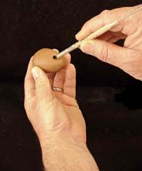
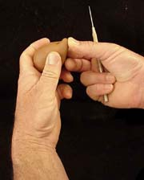
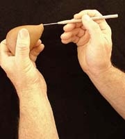
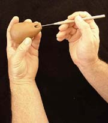
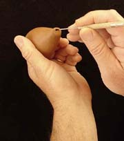
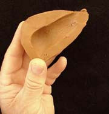
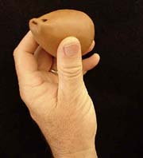
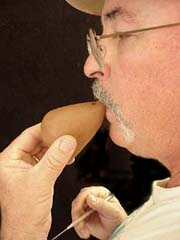
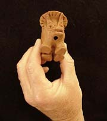
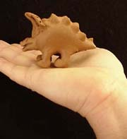

| How to Make a Clay Whistle
II
Technique by Chris Henley
Previous Page > How
to Make a Clay Whistle I
|  |
8. Here you see the hole that
is formed by the blunt end of the needle tool. Note the distance
it is from the "tip" of the form (Near my ring finger).
This distance is critical....too far from the tip makes it very
difficult to direct the air over the wedge that has been formed
by pushing the tool through the surface at an oblique angle.
you can compensate by extending the air slot, but stick with
these general proportions until you get the hang of it. What
you have formed here is a wedge-shaped hole in profile (see
photo #13). The thin edge of this wedge is the far edge of the
hole....the edge nearest to my left thumb, in this photo. |
|  |
9. Now you are going to form an
air passage (slot) to direct the air from your mouth over the
hole you made in the previous steps. I suggest you push the
"tip" up like you see at the left. Doing this makes
this part of the form a bit thicker and facilitates cutting
the air slot. If the clay you are working with is very groggy/sandy
you may need to make a substantial area for the air slot. |
|  |
10. It is crucial to make the
air slot parallel to the far edge of the hole you punched with
the blunt end of the tool. By making this air slot, you have,
in essence, formed the "mouthpiece" for your whistle.
I do this by holding the piece up to eye level and pushing the
needle through the thick part of the "tip" until it
touches the far edge of the hole. This is a guide hole. Put
a series of guide holes in the tip exactly like you did the
first one....be careful not to angle the needle up or down as
you do this. When you have 3 or 4 of these guide holes made
, then carefully move the needle back and forth (left and right)
while holding it as parallel as possible to the far edge of
the hole This creates an air slot that is parallel to the edge
that forms a wedge. It directs the air across this wedge and
creates the dynamics that produce the sound. |
|  |
11. Note that the needle tool
is pushed through the "tip" and touches the far edge
of the hole. As noted above, repeat this 3 or 4 times, so that
you have formed a line of independent guide holes for the slot. |
|  |
12. Here is the air slot you have
created by moving the needle tool right and left, thereby removing
the clay from the 3 or 4 guide holes you made in step 10. If
this air slot angles down into the chamber , or up over the
hole you probably won't get a sound other than a lot of huffing
and puffing. It has to be like Goldilocks said: "Just Right!"
The idea is to split the air you blow through this slot. The
far edge of the hole is the wedge that does the splitting. Don't
make this a round hole. It has to be a flat slot. |
|  |
13. This is a cut-away to show
the relationship of the hole and the air slot. The line represents
the air direction. It is, incidentally, the same direction that
you push the needle tool through to make the air slot. The left
end of this line touches what I've been referring to as the
far edge of the hole and the wedge. The line passes through
the air slot on its way to the wedge, where it is split, and
hopefully produces a pleasing sound. |
|  |
14. Here is what you get when
you are finished with the above steps. If you have done it correctly,
and the whistle gods are happy, and you have done a good deed,
it will whistle for you when you blow through the slot. Obviously,
what you see here is an un-adorned form. I'd stick with this
until you get the whistle part down. Once you get it to whistle
you can pierce the chamber to get multiple tones. The additional
tone holes can be placed anywhere you want to put your finger.
As I mentioned somewhere earlier, the size of the chamber impacts
the initial tone. Small chambers tend to produce very high tones.
They usually require a good blow to get the sound. A larger
chamber produces lower tones and often will only sound with
soft, gentle breaths. |
|  |
15. If you don't blow, it won't
go!. (Sorry, Johnny C.) If it doesn't
whistle now, it will not, and I really mean this,
it will not miraculously start whistling after it is fired.
If you are prissy about putting wet clay in your mouth then
find a geezer to test it for you. Remember, this is a wind
instrument. You have to pass wind through it to get it to
work. Geezers are good at this. If it
won't whistle check the following:
- Hole plugged or wedge distorted.
- Air slot is not parallel to far edge of
hole. Typically, beginners make a round hole instead of
a slot.
- Check edge of air slot that is nearest
the hole. Sometimes, when forming, it gets ragged and needs
to be carefully cleaned. Be cautious in doing this and don't
enlarge the slot or change its angle relative to the far
edge of the hole.
- Geezer is out of wind.
- Start over....it's only clay!
|
|  |
16. Here is a little critter that
has the air slot incorporated into its own mouth. The tone/note
holes are near it's booty, but you can't see them in this view. |
|  |
17. Side view of 16. Remember,
you have to do all the modeling before you pierce it for the
whistle or you run the risk of distorting the alignments of
the whistle hole and air slot. Enjoy!
Create! Teach a friend!
Each
of my own whistles carries this trademark signature. |
Thanks to Chris Henley (email: dch999@earthlink.net)
for kindly sharing this article! FYI, Chris also maintains his own
Pottery Tools
page.
Previous Page >
How to Make a Clay Whistle I
Appendix > Clay Water Bird Whistle
Related Articles
How to Make a Nightingale Cup
How to Make a Puzzle Mug
In Their Cups - The Story of the English
Puzzle Mug
More Articles
|